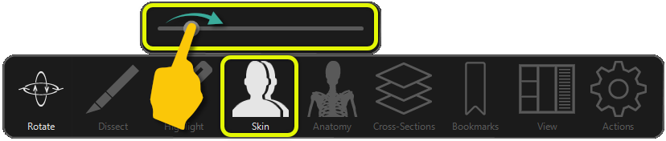
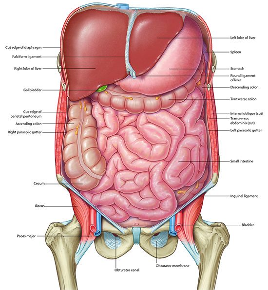

Abdominal Cavity In Situ: Lab 5 - Page 6 of 6
We will now add the skin to the abdominal wall.
| Add skin. | |
| Using the Highlight tool and your knowledge of the locations of organs, identify the abdominal organs by surface land marks. |
Need help? Use the Highlight tool to point to an area of the enclosed abdomen; the structure beneath the skin will be identified.

If you are having trouble locating an organ, you can adjust the density of the skin by swiping left or right with one finger on the Skin tool to see the organs beneath the different areas of the abdomen.
